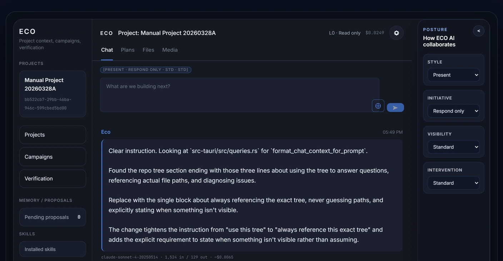

A local-first control plane for governing AI-assisted builds on long, complex jobs.

ECO is a dedicated workspace for getting real software built with AI — with you in charge the whole way. It keeps the AI on a leash so it can take on long, complicated jobs without wandering off or quietly breaking things, and nothing it does counts until you’ve checked it and signed off.
My biggest project, and the one I’m proudest of. It’s paused, and I’m not going to pretend otherwise. What it gave me is the hard part: how to structure and run a build this big. When I pick it back up, I’ll rebuild it from scratch with that knowledge instead of patching what’s there.
When a build runs long and the work gets complex, it goes sideways in the same few ways every time. Different AI models end up touching the same code — and it still has to read like one hand wrote it. The truth about where things stand gets scattered across chat windows that vanish the moment you close them. And the second you let the agents run themselves, you lose the thread on what was actually checked.
No off-the-shelf tool does this. That’s why I had to build it.
Nearly all of ECO is my design. The code itself is AI-written under my direction and my checkpoints; the architecture, the calls, and the governance are mine. It all runs local, on my machine, not someone’s cloud.
Less than the other projects — but not nothing. There’s a provider layer so ECO can run against mock AI or live, and swap between vendors: Anthropic is the daily driver, but there’s a proven live run on OpenAI too (VERIF-182), so this one isn’t tied to a single AI company.
The agent setup isn’t a quirk — it’s the shape complex work needs. Any well-run shop splits it the same way: someone plans, someone builds, and the boss signs off on both. The agents are off the shelf; the framework around them — the roles, the separation, the rules, the checkpoints — is mine.
The pre-commit review is a hard stop. Nothing gets committed without my sign-off.
A verification log that’s the real spine of the project — each proof noting what it does and doesn’t prove. Those receipts live in the verification log, not in git history.
It’s the biggest thing I’ve built, and it’s solving a problem I couldn’t find solved anywhere else. Building it is how I learned to structure big work: keep a long, multi-agent job coherent, keep a human in charge of every call, and prove what’s been checked instead of hoping. Pausing it was a call too. I’d rather rebuild it clean than keep patching.
If a client’s got a build that’s going to run for months across more than one AI, this is the kind of control I bring to it.